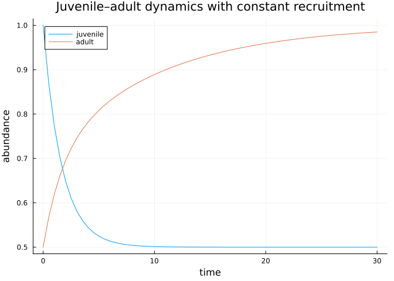
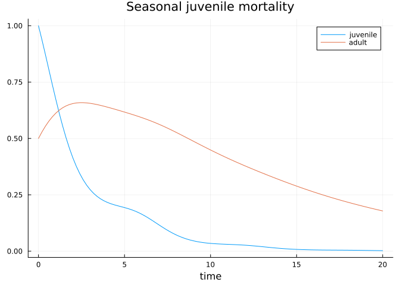

Introduction to finite-state continuous-time dynamics
Overview
FiniteStatePopulationDynamics.jl handles discrete-stage populations evolving in continuous time via an infinitesimal generator matrix $\mathbf{G}$. Given stage abundances $\mathbf{n}(t)$, the dynamics are
\[\frac{d\mathbf{n}}{dt} = \mathbf{G}\,\mathbf{n}(t) + \mathbf{s}(t),\]
where $\mathbf{s}(t)$ is an optional source/forcing term. The package lowers these problems to SciML ODEProblems (and DDEProblems when delays are present) and integrates them with any OrdinaryDiffEq.jl solver.
This vignette introduces the core building blocks using a two-stage juvenile–adult model.
Setup
using FiniteStatePopulationDynamics
using StructuredPopulationCore
using OrdinaryDiffEq
using PlotsThe package exposes a handful of semantic marker types that classify the problem kind:
FiniteState() isa AbstractStateSemantics, ContinuousState() isa AbstractStateSemantics(true, true)ContinuousTime() isa AbstractTimeSemantics, DiscreteTime() isa AbstractTimeSemantics(true, true)Structure traits further classify the model topology:
SimpleFiniteStateStructure() isa AbstractFiniteStateDynamicsStructure,
GeneralFiniteStateStructure() isa AbstractFiniteStateDynamicsStructure,
SimpleFiniteStateStructure() isa AbstractProjectionStructure(true, true, true)A two-stage juvenile–adult model
Stages are held in a DiscreteDomain, itself an AbstractStateDomain:
domain = DiscreteDomain([:juvenile, :adult])
domain isa AbstractStateDomain, n_states(domain)(true, 2)Each stage is addressable by symbol, string, or index via state_index:
state_index(domain, :juvenile), state_index(domain, "adult"), state_index(domain, 2)(1, 2, 2)The generator encodes three flows: juvenile mortality, maturation to adult, and adult mortality. Columns sum to $\le 0$:
mu_J = 0.4 # juvenile mortality rate
gamma = 0.2 # maturation rate
mu_A = 0.1 # adult mortality rate
G = [-(mu_J + gamma) 0.0;
gamma -mu_A]2×2 Matrix{Float64}:
-0.6 0.0
0.2 -0.1A constant source term adds juveniles via density-independent recruitment:
source = [0.3, 0.0]
u0 = [1.0, 0.5]
prob = FiniteStateGeneratorProblem(G, domain, u0, (0.0, 30.0); source = source)
prob isa AbstractFiniteStateDynamicsProblemtrueLowering and solving
The problem lowers to a SciML ODEProblem:
odeprob = to_ode_problem(prob)
sol = solve(odeprob, Tsit5(); saveat = 0.5)
plot(sol.t, hcat(sol.u...)'; labels = ["juvenile" "adult"],
xlabel = "time", ylabel = "abundance",
title = "Juvenile–adult dynamics with constant recruitment")
solve also dispatches directly on the FSPD problem:
sol2 = solve(prob, Tsit5(); saveat = 30.0)
sol2.u[end]2-element Vector{Float64}:
0.5000023277004855
0.9850627516817598remake and dispatch restrictions
remake updates fields on a problem without rebuilding it from scratch:
prob_long = FiniteStatePopulationDynamics.remake(prob; tspan = (0.0, 60.0))
prob_long.tspan(0.0, 60.0)FSPD is a continuous-time package. Semantic solvers for discrete-time iteration or direct eigenanalysis are accepted only as error documentation:
try
solve(prob, DirectIteration())
catch err
err
endArgumentError("DirectIteration is not defined for FiniteStateGeneratorProblem; use a SciML ODE algorithm instead.")try
solve(prob, EigenAnalysis())
catch err
err
endArgumentError("EigenAnalysis is not defined for FiniteStateGeneratorProblem; use to_ode_problem or a SciML ODE solve instead.")Callable generators
Generators can be time- and parameter-dependent. The signature is (u, p, t) -> Matrix:
mu_seasonal(u, p, t) = [-(p.mu0 + p.A*sin(t)) 0.0;
p.gamma -p.mu_A]
prob_cal = FiniteStateGeneratorProblem(
mu_seasonal,
domain,
u0,
(0.0, 20.0);
p = (mu0 = 0.3, A = 0.2, gamma = 0.2, mu_A = 0.1),
)
sol_cal = solve(to_ode_problem(prob_cal), Tsit5(); saveat = 0.2)
plot(sol_cal.t, hcat(sol_cal.u...)'; labels = ["juvenile" "adult"],
xlabel = "time", title = "Seasonal juvenile mortality")
Summary
- Build a
DiscreteDomain, a generator matrixG, and wrap both in aFiniteStateGeneratorProblem. - Lower with
to_ode_problemor callsolvedirectly; pass anyOrdinaryDiffEqalgorithm. - Abstract types (
AbstractFiniteStateDynamicsStructure,AbstractStateDomain,AbstractStateSemantics,AbstractTimeSemantics,AbstractProjectionStructure,AbstractFiniteStateDynamicsProblem) classify every concrete type in the API.
Subsequent vignettes cover events/callbacks (vignette 02) and delay-generator dynamics (vignette 03).